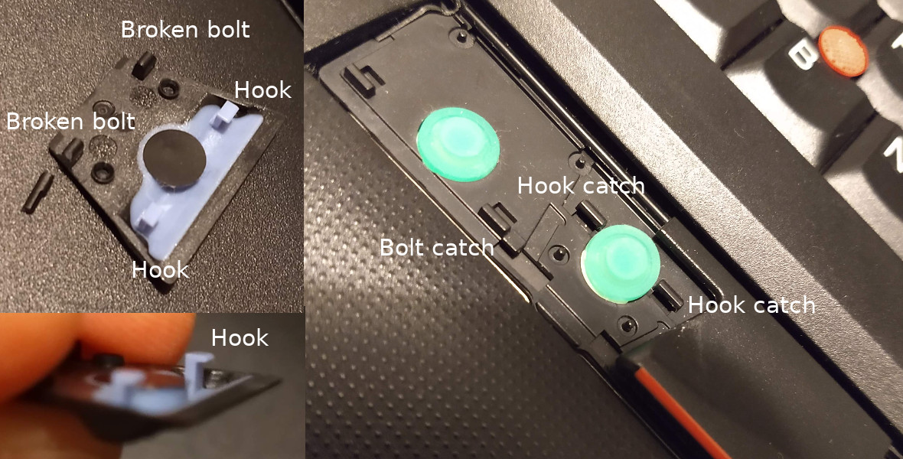
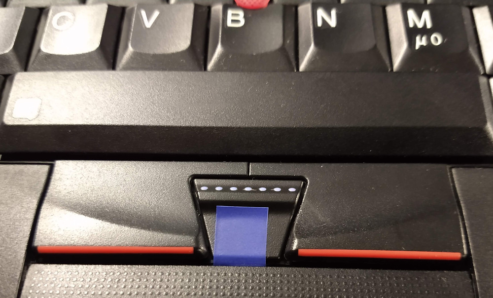

So far, I worked with two ThinkPads:
- T410, bought new in 2010. I replaced HDD/SSD, RAM, fan and keyboard.
- X220, bought refurbished in 2016 with an IPS screen. I cleaned it thoroughly, swapped SSD, RAM and keyboard.
The hardware is still suitable for modern-day software development work and I have yet to find a better typing experience on a laptop keyboard!
Some time ago, I broke one bolt keeping the middle trackpoint button of the X220 keyboard in place. This resulted in an unpleasant scrolling experience.
When trying to remove the button to further investigate and fix the issue (no repair manual was consulted ☹), I broke the other bolt.

Isolation tape to the rescue!
The solution was straightforward:
- Push the hooks into the hook catchers, ensure the button rubber does not dislocate
- Cut a strip of isolation tape in half
- Attach the tape to the button and wrap it around to the backside of the keyboard, firmly
- Use the second half to secure the first half below the keyboard
The result:

MacGyver score: 6 out of 10
- Swiss Army Knife was used to (un-)screw the keyboard
- Tape fixed the issue
- Bubble gum was only chewed, not applied
- No evil plan was spoiled
☺